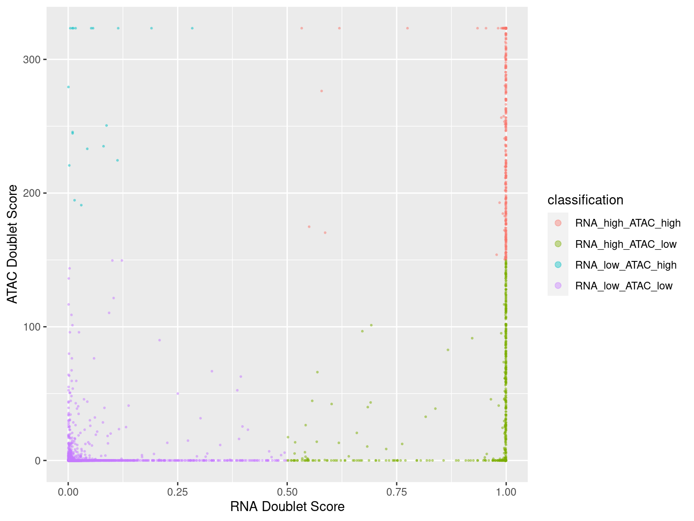
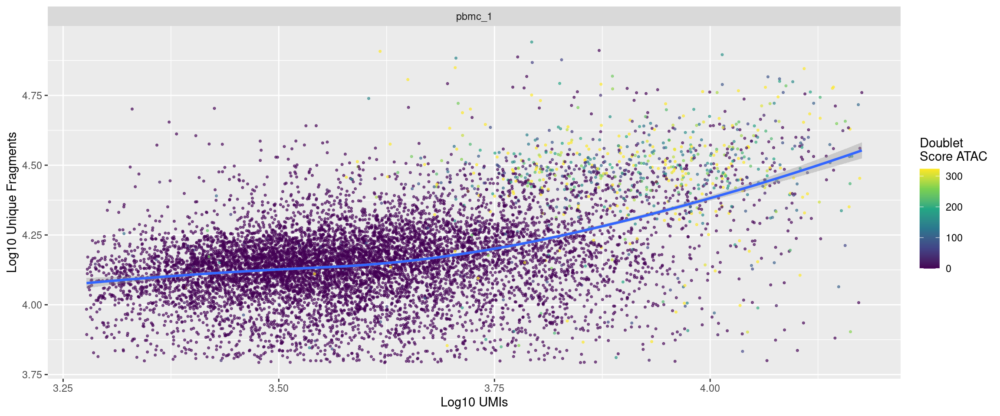
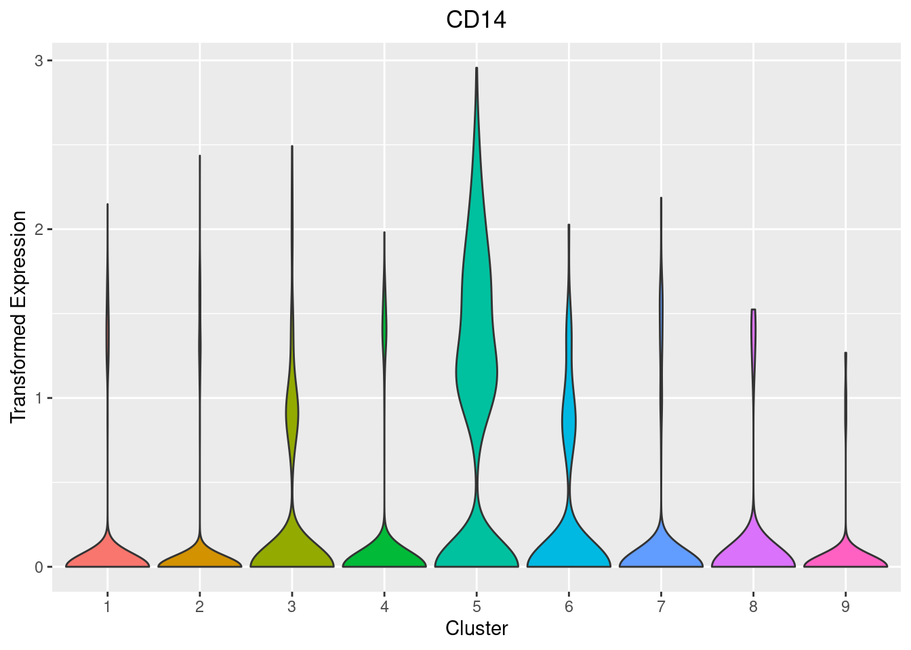

10X PBMC GEX Processing
Philipp SL Schäfer
2022-04-20-14-59
Status
Work in progress.
Introduction
The goals are:
Visualize common quality control statistic.
Determine thresholds using the QC visualizations.
Subset the cell accordingly.
Setup
knitr::opts_chunk$set(echo = TRUE)
library(reticulate)
Sys.setenv(RETICULATE_PYTHON =
"/home/philipp/miniconda3/envs/r-reticulate/bin/python")
timestamp <- format(Sys.time(), "%Y-%m-%d-%H-%M")
s <- 4242Loading Packages
suppressPackageStartupMessages({
library(tidyverse)
library(magrittr)
library(sparseMatrixStats)
library(scDblFinder)
library(scuttle)
library(scran)
library(scater)
library(ggside)
library(ArchR)
library(parallel)
library(clustree)
})Import Data
if (Sys.info()["nodename"] == "CrunchyPeanut") {
input_dir <- "/mnt/sda/data/10X_pbmc_multiome_10k/"
output_dir <- "/home/philipp/Bioinfo_Playground/10x_pbmc_multiome_processing_output/"
if (!dir.exists(output_dir)) dir.create(output_dir)
} else {
warning("No appropriate nodename, adjust paths manually")
stop()
}list.files(input_dir)## [1] "description.txt"
## [2] "pbmc_granulocyte_sorted_10k_atac_fragments.tsv.gz"
## [3] "pbmc_granulocyte_sorted_10k_atac_fragments.tsv.gz.tbi"
## [4] "pbmc_granulocyte_sorted_10k_per_barcode_metrics.csv"
## [5] "pbmc_granulocyte_sorted_10k_raw_feature_bc_matrix.h5"
## [6] "pbmc_granulocyte_sorted_10k_summary.csv"Cellranger QC Measures
We will also read in the summary.csv files generated by cellranger.
read_csv(list.files(input_dir, full.names = TRUE)[
str_detect(list.files(input_dir), "summary.csv$")],
show_col_types = FALSE) %>%
mutate(across(everything(), as.character)) %>%
pivot_longer(cols=everything(), names_to="Metric", values_to="Value")RNA QC
Reading in the snRNA-seq data. We will read in the “raw_feature_bc_matrix.h5” matrices.
rna_raw <- Seurat::Read10X_h5(
list.files(input_dir, full.names = TRUE)[
str_detect(list.files(input_dir), "raw_feature_bc_matrix.h5$")]
) %>%
.$`Gene Expression`## Warning in sparseMatrix(i = indices[] + 1, p = indptr[], x = as.numeric(x =
## counts[]), : 'giveCsparse' has been deprecated; setting 'repr = "T"' for you## Genome matrix has multiple modalities, returning a list of matrices for this genomestr(rna_raw)## Formal class 'dgCMatrix' [package "Matrix"] with 6 slots
## ..@ i : int [1:30803407] 4311 6042 2066 19813 22763 36566 3182 27462 846 21902 ...
## ..@ p : int [1:736321] 0 2 3 4 6 8 10 13 18 19 ...
## ..@ Dim : int [1:2] 36601 736320
## ..@ Dimnames:List of 2
## .. ..$ : chr [1:36601] "MIR1302-2HG" "FAM138A" "OR4F5" "AL627309.1" ...
## .. ..$ : chr [1:736320] "AAACAGCCAAACAACA-1" "AAACAGCCAAACATAG-1" "AAACAGCCAAACCCTA-1" "AAACAGCCAAACCTAT-1" ...
## ..@ x : num [1:30803407] 1 1 1 1 1 1 1 1 1 1 ...
## ..@ factors : list()Filter Genes
First we will remove all genes that are not expressed in at least 3 cells.
dim(rna_raw)## [1] 36601 736320rna_raw <- rna_raw[sparseMatrixStats::rowSums2(rna_raw != 0) > 0, ]
dim(rna_raw)## [1] 29972 736320Empty Droplets
Before subsetting we will create a tibble containing the metadata which we will update throughout the analysis.
coldata <- tibble::tibble(
barcode = colnames(rna_raw),
sample = "pbmc_1")Plotting log10 of the cumulative UMI counts vs the rank of the cell or rather barcode (“kneeplot”). We need to find thresholds for each sample.
purrr::map_dfr(unique(coldata$sample), function(smp) {
tibble(sample = smp,
umi_per_cell = sparseMatrixStats::colSums2(rna_raw[, coldata$barcode[coldata$sample==smp]]))
}) %>%
arrange(sample, desc(umi_per_cell)) %>%
group_by(sample) %>%
mutate(idx = seq_along(sample)) %>%
mutate(cum_umi_per_cell = cumsum(umi_per_cell)) %>%
ggplot() +
geom_line(aes(x=idx, y=cum_umi_per_cell)) +
facet_wrap(~sample, scales = "fixed") +
scale_y_log10() + scale_x_log10() +
labs(x = "Index", y = "Cumulative UMI Count")And we will be using the following thresholds (determined by visual inspection). Especially for “sm027_Tel_5c_20211123” there is a very obvious knee, for the other samples the thresholds are a little bit arbitrary (like everything in bioinformatics).
thresholds <- c("pbmc_1" = 11.5e3)
thresholds## pbmc_1
## 11500p.list <- purrr::map(unique(coldata$sample), function(smp) {
tibble::tibble(
sample = smp,
umi_per_cell = sparseMatrixStats::colSums2(rna_raw[, coldata$barcode[coldata$sample==smp]])) %>%
arrange(sample, desc(umi_per_cell)) %>%
group_by(sample) %>%
mutate(idx = seq_along(sample)) %>%
mutate(cum_umi_per_cell = cumsum(umi_per_cell)) %>%
ggplot() +
geom_line(aes(x=idx, y=cum_umi_per_cell)) +
geom_vline(xintercept = thresholds[smp], color = "red") +
scale_y_log10() + scale_x_log10() +
labs(x = "Index", y = "Cumulative UMI Count", title = smp) +
theme(plot.title = element_text(hjust = 0.5))
})
do.call(gridExtra::grid.arrange, p.list)Lastly we subset the count matrices based on these results.
cell_qc <- purrr::map_dfr(unique(coldata$sample), function(smp) {
tibble(sample = smp,
sum_umis = sparseMatrixStats::colSums2(rna_raw[, coldata$barcode[coldata$sample==smp]]),
detected_genes = sparseMatrixStats::colSums2(rna_raw[, coldata$barcode[coldata$sample==smp]] != 0),
barcode = coldata$barcode[coldata$sample==smp],
threshold = thresholds[smp]) }) %>%
arrange(sample, desc(sum_umis)) %>%
group_by(sample) %>%
mutate(rank = seq_along(sample)) %>%
mutate(cum_umi_per_cell = cumsum(sum_umis)) %>%
mutate(non_empty = ifelse(rank <= threshold, TRUE, FALSE))
coldata <- coldata %>%
dplyr::left_join(cell_qc, by=c("sample", "barcode")) %>%
dplyr::select(sample, barcode, sum_umis, detected_genes, non_empty)
dim(rna_raw)## [1] 29972 736320rna <- rna_raw[,coldata %>% dplyr::filter(non_empty) %>% dplyr::pull(barcode)]
coldata <- coldata %>% dplyr::filter(non_empty)
dim(rna)## [1] 29972 11500Check again. And I think it looks ok now.
purrr::map_dfr(unique(coldata$sample), function(smp) {
tibble(sample = smp,
umi_per_cell = sparseMatrixStats::colSums2(rna[, coldata$barcode[coldata$sample==smp]]))
}) %>%
arrange(sample, desc(umi_per_cell)) %>%
group_by(sample) %>%
mutate(idx = seq_along(sample)) %>%
mutate(cum_umi_per_cell = cumsum(umi_per_cell)) %>%
ggplot() +
geom_line(aes(x=idx, y=cum_umi_per_cell)) +
facet_wrap(~sample, scales = "fixed") +
scale_y_log10() + scale_x_log10() +
labs(x = "Index", y = "Cumulative UMI Count")RNA Doublet Scores - scDblFinder
We will use scDblFinder as this package it implemented in R and seems to be better than scrublet (according to their vignette at least, but I guess their comparison might be biased!). Usually these tools simulate doublets and check how similar your actual cells are to these simulated doublets.
See the description/vignette of the tool here:
To use the tools we will temporarily create a single cell experiment object.
dbr <- 0.076
print(paste0("Using an expected doublet rate of: ", dbr))## [1] "Using an expected doublet rate of: 0.076"sce <- SingleCellExperiment(list(counts = rna))
sce <- logNormCounts(sce)
dec <- modelGeneVar(sce)
hvgs <- getTopHVGs(dec, n=2000)
set.seed(s)
sce <- runPCA(sce, ncomponents=30, subset_row=hvgs)
sce <- runUMAP(sce, dimred="PCA")
#scores <- computeDoubletDensity(sce, subset.row=hvgs)
sce <- scDblFinder(sce, dbr=dbr, iter=1)
scores <- sce$scDblFinder.score
classification <- sce$scDblFinder.class
barcode <- rownames(sce@colData)
# prepare plots
p1 <- tibble::tibble(cell = names(scores), score = scores,
UMAP1 = reducedDim(sce, "UMAP")[,1],
UMAP2 = reducedDim(sce, "UMAP")[,2]) %>%
ggplot() +
geom_point(aes(x=UMAP1, y=UMAP2, color=score), size=0.2) +
scale_color_viridis_c()
p2 <- ggplot() +
geom_histogram(aes(scores), bins = 100, fill="grey", color="black") +
labs(y = "Count", x = "Doublet Score")
# use cowplot for plotting the grid
cowplot::plot_grid(p1, p2)doublet_scores <- tibble::tibble(barcode = barcode,
score = scores,
classification = classification)
coldata <- coldata %>%
left_join(doublet_scores, by="barcode")Check how many predicted doublets per sample using our threshold set above. Let’s keep the doublet scores and we will not remove/mask any cells, but rather check later on whether doublets are particularly enriched in any cluster we get.
coldata %>%
dplyr::count(sample, classification)QC Statistics
Let’s look at some common QC statistics:
- Total number of UMIs per cell
- Total number of detected genes per cell
- Fraction of mitochondrial genes.
However, using mitochondrial genes probably makes no sense looking at single-nuc data. See this paper for a short comparison between single-cell and single-nuc RNA-sequencing. (1) Furthermore, we do not know the names of the mitochondrial gene here, most likely they are gene starting with "mt-/_".
mito_genes <-
rownames(rna)[grep("^MT-", rownames(rna))]
mito_genes## [1] "MT-ND1" "MT-ND2" "MT-CO1" "MT-CO2" "MT-ATP8" "MT-ATP6" "MT-CO3"
## [8] "MT-ND3" "MT-ND4L" "MT-ND4" "MT-ND5" "MT-ND6" "MT-CYB"Computing the QC stats.
Looking at the bottom/left tail of the distributions one might argue that the cutoff with regards to the number of UMIs is a little bit too strict for sample “sm023.”
qc_stats_before <- tibble::tibble(
sample = "pcmbc_1",
barcode = colnames(rna),
umis_per_cell = Matrix::colSums(rna),
genes_per_cell = Matrix::colSums(rna != 0),
mt_fraction = Matrix::colSums(rna[mito_genes, ]) / Matrix::colSums(rna) * 100
)
qc_stats_before %>%
pivot_longer(cols = !c(sample, barcode), names_to = "stat") %>%
mutate(stat = ifelse(stat=="mt_fraction", "mt_fraction (%)", stat)) %>%
ggplot() +
geom_violin(aes(x=sample, y=value, fill=sample)) +
facet_wrap(~ stat, scales = "free") +
theme(axis.text.x = element_text(angle = 45, hjust = 1),
legend.position = "none")Generally speaking the initial QC should not be too stringent.
Removing cells with:
- More than 6000 genes per cell
- Mitochondrial fraction (%) above 20
- More than 15000 UMIs per cell
Let’s add the QC thresholds to our coldata.
coldata <- coldata %>%
mutate(sum_umis_in_bound = (sum_umis <= 15000),
detected_genes_in_bound = (detected_genes <= 6000),
mt_fraction = Matrix::colSums(rna[mito_genes, ]) /
Matrix::colSums(rna) * 100,
mt_fraction_in_bound = mt_fraction <= 20) %>%
rowwise() %>%
mutate(qc_pass = all(non_empty, sum_umis_in_bound,
detected_genes_in_bound, mt_fraction_in_bound)) %>%
ungroup()
coldata %>%
dplyr::filter(qc_pass) %>%
glimpse()## Rows: 11,319
## Columns: 12
## $ sample <chr> "pbmc_1", "pbmc_1", "pbmc_1", "pbmc_1", "pbmc_…
## $ barcode <chr> "AAACAGCCAAGGAATC-1", "AAACAGCCAATCCCTT-1", "A…
## $ sum_umis <dbl> 8380, 3771, 6876, 5415, 2759, 7614, 3633, 7782…
## $ detected_genes <dbl> 3308, 1896, 2904, 2282, 1353, 3061, 1691, 3028…
## $ non_empty <lgl> TRUE, TRUE, TRUE, TRUE, TRUE, TRUE, TRUE, TRUE…
## $ score <dbl> 0.5405619144, 0.0034866252, 0.6318094730, 0.12…
## $ classification <fct> doublet, singlet, doublet, singlet, singlet, d…
## $ sum_umis_in_bound <lgl> TRUE, TRUE, TRUE, TRUE, TRUE, TRUE, TRUE, TRUE…
## $ detected_genes_in_bound <lgl> TRUE, TRUE, TRUE, TRUE, TRUE, TRUE, TRUE, TRUE…
## $ mt_fraction <dbl> 7.470167, 10.527711, 6.457243, 6.500462, 6.922…
## $ mt_fraction_in_bound <lgl> TRUE, TRUE, TRUE, TRUE, TRUE, TRUE, TRUE, TRUE…
## $ qc_pass <lgl> TRUE, TRUE, TRUE, TRUE, TRUE, TRUE, TRUE, TRUE…qc_stats_after <- tibble::tibble(
sample = "pcmbc_1",
barcode = colnames(rna[,coldata$barcode[coldata$qc_pass]]),
umis_per_cell = Matrix::colSums(rna[,coldata$barcode[coldata$qc_pass]]),
genes_per_cell = Matrix::colSums(rna[,coldata$barcode[coldata$qc_pass]] != 0),
mt_fraction = Matrix::colSums(rna[,coldata$barcode[coldata$qc_pass]][mito_genes, ]) / Matrix::colSums(rna[,coldata$barcode[coldata$qc_pass]]) * 100
)
qc_stats_after %>%
pivot_longer(cols = !c(sample, barcode), names_to = "stat") %>%
mutate(stat = ifelse(stat=="mt_fraction", "mt_fraction (%)", stat)) %>%
ggplot() +
geom_violin(aes(x=sample, y=value, fill=sample)) +
facet_wrap(~ stat, scales = "free") +
theme(axis.text.x = element_text(angle = 45, hjust = 1),
legend.position = "none")ATAC QC
ArchR Arrow Files
Getting the fragment files.
fragment_files <- list.files(input_dir, full.names = TRUE)[
str_detect(list.files(input_dir), "fragments.tsv.gz$")]
names(fragment_files) <- "pbmc_1"Using hg19 as reference genome.
addArchRGenome("hg19")## Setting default genome to Hg19.addArchRThreads(threads = 1) ## Setting default number of Parallel threads to 1.Sys.setenv(HDF5_USE_FILE_LOCKING=FALSE, RHDF5_USE_FILE_LOCKING=FALSE)We will first create QC stats to set the thresholds
set.seed(s)
min_tss <- 3
min_frags <- 1000
ArrowFiles <- createArrowFiles(
inputFiles = fragment_files,
sampleNames = names(fragment_files),
minTSS = min_tss, # seems to be appropriate
minFrags = min_frags, # seems to be appropriate
addTileMat = TRUE,
addGeneScoreMat = FALSE,
geneAnnotation = ArchR::geneAnnoHg38,
genomeAnnotation = ArchR::genomeAnnoHg38,
subThreading = FALSE,
QCDir = paste0(output_dir, "Pre_Consensus_ArchR_QC"),
offsetPlus = 4,
offsetMinus = -5,
force = TRUE
)## ArchR logging to : ArchRLogs/ArchR-createArrows-41844217fe09-Date-2022-04-20_Time-15-00-52.log
## If there is an issue, please report to github with logFile!## Cleaning Temporary Files## 2022-04-20 15:00:52 : Batch Execution w/ safelapply!, 0 mins elapsed.## (pbmc_1 : 1 of 1) Checking if completed file exists!## 2022-04-20 15:00:52 : (pbmc_1 : 1 of 1) Arrow Exists! Overriding since force = TRUE!, 0.002 mins elapsed.## (pbmc_1 : 1 of 1) Determining Arrow Method to use!## 2022-04-20 15:00:52 : (pbmc_1 : 1 of 1) Reading In Fragments from inputFiles (readMethod = tabix), 0.002 mins elapsed.## 2022-04-20 15:00:52 : (pbmc_1 : 1 of 1) Tabix Bed To Temporary File, 0.002 mins elapsed.## Warning in sprintf("%s Reading TabixFile %s Percent", prefix, round(100 * : one
## argument not used by format '%s Reading TabixFile %s Percent'## 2022-04-20 15:01:56 : (pbmc_1 : 1 of 1) Reading TabixFile 8 Percent, 1.063 mins elapsed.## Warning in sprintf("%s Reading TabixFile %s Percent", prefix, round(100 * : one
## argument not used by format '%s Reading TabixFile %s Percent'## 2022-04-20 15:02:41 : (pbmc_1 : 1 of 1) Reading TabixFile 17 Percent, 1.814 mins elapsed.## Warning in sprintf("%s Reading TabixFile %s Percent", prefix, round(100 * : one
## argument not used by format '%s Reading TabixFile %s Percent'## 2022-04-20 15:03:23 : (pbmc_1 : 1 of 1) Reading TabixFile 25 Percent, 2.515 mins elapsed.## Warning in sprintf("%s Reading TabixFile %s Percent", prefix, round(100 * : one
## argument not used by format '%s Reading TabixFile %s Percent'## 2022-04-20 15:04:00 : (pbmc_1 : 1 of 1) Reading TabixFile 33 Percent, 3.135 mins elapsed.## Warning in sprintf("%s Reading TabixFile %s Percent", prefix, round(100 * : one
## argument not used by format '%s Reading TabixFile %s Percent'## 2022-04-20 15:04:38 : (pbmc_1 : 1 of 1) Reading TabixFile 42 Percent, 3.761 mins elapsed.## Warning in sprintf("%s Reading TabixFile %s Percent", prefix, round(100 * : one
## argument not used by format '%s Reading TabixFile %s Percent'## 2022-04-20 15:05:19 : (pbmc_1 : 1 of 1) Reading TabixFile 50 Percent, 4.44 mins elapsed.## Warning in sprintf("%s Reading TabixFile %s Percent", prefix, round(100 * : one
## argument not used by format '%s Reading TabixFile %s Percent'## 2022-04-20 15:05:46 : (pbmc_1 : 1 of 1) Reading TabixFile 58 Percent, 4.901 mins elapsed.## Warning in sprintf("%s Reading TabixFile %s Percent", prefix, round(100 * : one
## argument not used by format '%s Reading TabixFile %s Percent'## 2022-04-20 15:06:19 : (pbmc_1 : 1 of 1) Reading TabixFile 67 Percent, 5.44 mins elapsed.## Warning in sprintf("%s Reading TabixFile %s Percent", prefix, round(100 * : one
## argument not used by format '%s Reading TabixFile %s Percent'## 2022-04-20 15:06:53 : (pbmc_1 : 1 of 1) Reading TabixFile 75 Percent, 6.019 mins elapsed.## Warning in sprintf("%s Reading TabixFile %s Percent", prefix, round(100 * : one
## argument not used by format '%s Reading TabixFile %s Percent'## 2022-04-20 15:07:29 : (pbmc_1 : 1 of 1) Reading TabixFile 83 Percent, 6.621 mins elapsed.## Warning in sprintf("%s Reading TabixFile %s Percent", prefix, round(100 * : one
## argument not used by format '%s Reading TabixFile %s Percent'## 2022-04-20 15:07:47 : (pbmc_1 : 1 of 1) Reading TabixFile 92 Percent, 6.918 mins elapsed.## Warning in sprintf("%s Reading TabixFile %s Percent", prefix, round(100 * : one
## argument not used by format '%s Reading TabixFile %s Percent'## 2022-04-20 15:08:05 : (pbmc_1 : 1 of 1) Reading TabixFile 100 Percent, 7.221 mins elapsed.## 2022-04-20 15:08:06 : (pbmc_1 : 1 of 1) Successful creation of Temporary File, 7.233 mins elapsed.## 2022-04-20 15:08:06 : (pbmc_1 : 1 of 1) Creating ArrowFile From Temporary File, 7.233 mins elapsed.## 2022-04-20 15:09:50 : (pbmc_1 : 1 of 1) Successful creation of Arrow File, 8.958 mins elapsed.## 2022-04-20 15:11:33 : (pbmc_1 : 1 of 1) CellStats : Number of Cells Pass Filter = 11701 , 10.676 mins elapsed.## 2022-04-20 15:11:33 : (pbmc_1 : 1 of 1) CellStats : Median Frags = 13565 , 10.676 mins elapsed.## 2022-04-20 15:11:33 : (pbmc_1 : 1 of 1) CellStats : Median TSS Enrichment = 13.597 , 10.676 mins elapsed.## 2022-04-20 15:11:35 : (pbmc_1 : 1 of 1) Adding Additional Feature Counts!, 10.712 mins elapsed.## 2022-04-20 15:12:53 : (pbmc_1 : 1 of 1) Removing Fragments from Filtered Cells, 12.012 mins elapsed.## 2022-04-20 15:12:53 : (pbmc_1 : 1 of 1) Creating Filtered Arrow File, 12.012 mins elapsed.## 2022-04-20 15:13:28 : (pbmc_1 : 1 of 1) Finished Constructing Filtered Arrow File!, 12.596 mins elapsed.## 2022-04-20 15:13:28 : (pbmc_1 : 1 of 1) Adding TileMatrix!, 12.597 mins elapsed.## 2022-04-20 15:15:11 : (pbmc_1 : 1 of 1) Finished Creating Arrow File, 14.314 mins elapsed.## ArchR logging successful to : ArchRLogs/ArchR-createArrows-41844217fe09-Date-2022-04-20_Time-15-00-52.logGet the QC stats
pre_filter_meta <- purrr::map_dfr(
list.dirs(paste0(output_dir, "Pre_Consensus_ArchR_QC"), recursive = FALSE),
function(smp) {
files <- list.files(smp, full.names = TRUE)
pre_filter <- readRDS(files[str_detect(files, "Pre-Filter-Metadata")])
as_tibble(pre_filter)
}) %>%
mutate(sample = str_extract(cellNames, "[^#]+(?=#[ATGC]{16})"),
barcode = str_extract(cellNames, "[ATGC]{16}-[0-9]"))pre_filter_meta %>%
ggplot() +
geom_density2d_filled(aes(x=log10(nFrags), y=TSSEnrichment), bins=20) +
facet_wrap(~sample) +
theme(legend.position = "none") +
labs(x = "Log10 Unique Fragments", y = "TSS Enrichment Score")Looking at the QC plots we will use the following thresholds and recreate the arrow files.
set.seed(s)
min_tss <- 9
min_frags <- 6200
pre_filter_meta <- pre_filter_meta %>%
mutate(Keep = ifelse(TSSEnrichment > min_tss & nFrags > min_frags, 1, 0))
ArrowFiles <- createArrowFiles(
inputFiles = fragment_files,
sampleNames = names(fragment_files),
minTSS = min_tss, # seems to be appropriate
minFrags = min_frags, # seems to be appropriate
addTileMat = TRUE,
addGeneScoreMat = TRUE,
geneAnnotation = ArchR::geneAnnoHg38,
genomeAnnotation = ArchR::genomeAnnoHg38,
subThreading = FALSE,
QCDir = paste0(output_dir, "Consensus_ArchR_QC"),
offsetPlus = 4,
offsetMinus = -5,
force = TRUE
)## ArchR logging to : ArchRLogs/ArchR-createArrows-418446f35ed-Date-2022-04-20_Time-15-15-12.log
## If there is an issue, please report to github with logFile!## Cleaning Temporary Files## 2022-04-20 15:15:12 : Batch Execution w/ safelapply!, 0 mins elapsed.## (pbmc_1 : 1 of 1) Checking if completed file exists!## 2022-04-20 15:15:12 : (pbmc_1 : 1 of 1) Arrow Exists! Overriding since force = TRUE!, 0 mins elapsed.## (pbmc_1 : 1 of 1) Determining Arrow Method to use!## 2022-04-20 15:15:12 : (pbmc_1 : 1 of 1) Reading In Fragments from inputFiles (readMethod = tabix), 0.003 mins elapsed.## 2022-04-20 15:15:12 : (pbmc_1 : 1 of 1) Tabix Bed To Temporary File, 0.003 mins elapsed.## Warning in sprintf("%s Reading TabixFile %s Percent", prefix, round(100 * : one
## argument not used by format '%s Reading TabixFile %s Percent'## 2022-04-20 15:16:13 : (pbmc_1 : 1 of 1) Reading TabixFile 8 Percent, 1.015 mins elapsed.## Warning in sprintf("%s Reading TabixFile %s Percent", prefix, round(100 * : one
## argument not used by format '%s Reading TabixFile %s Percent'## 2022-04-20 15:16:58 : (pbmc_1 : 1 of 1) Reading TabixFile 17 Percent, 1.766 mins elapsed.## Warning in sprintf("%s Reading TabixFile %s Percent", prefix, round(100 * : one
## argument not used by format '%s Reading TabixFile %s Percent'## 2022-04-20 15:17:39 : (pbmc_1 : 1 of 1) Reading TabixFile 25 Percent, 2.462 mins elapsed.## Warning in sprintf("%s Reading TabixFile %s Percent", prefix, round(100 * : one
## argument not used by format '%s Reading TabixFile %s Percent'## 2022-04-20 15:18:16 : (pbmc_1 : 1 of 1) Reading TabixFile 33 Percent, 3.077 mins elapsed.## Warning in sprintf("%s Reading TabixFile %s Percent", prefix, round(100 * : one
## argument not used by format '%s Reading TabixFile %s Percent'## 2022-04-20 15:18:54 : (pbmc_1 : 1 of 1) Reading TabixFile 42 Percent, 3.698 mins elapsed.## Warning in sprintf("%s Reading TabixFile %s Percent", prefix, round(100 * : one
## argument not used by format '%s Reading TabixFile %s Percent'## 2022-04-20 15:19:34 : (pbmc_1 : 1 of 1) Reading TabixFile 50 Percent, 4.372 mins elapsed.## Warning in sprintf("%s Reading TabixFile %s Percent", prefix, round(100 * : one
## argument not used by format '%s Reading TabixFile %s Percent'## 2022-04-20 15:20:01 : (pbmc_1 : 1 of 1) Reading TabixFile 58 Percent, 4.827 mins elapsed.## Warning in sprintf("%s Reading TabixFile %s Percent", prefix, round(100 * : one
## argument not used by format '%s Reading TabixFile %s Percent'## 2022-04-20 15:20:34 : (pbmc_1 : 1 of 1) Reading TabixFile 67 Percent, 5.363 mins elapsed.## Warning in sprintf("%s Reading TabixFile %s Percent", prefix, round(100 * : one
## argument not used by format '%s Reading TabixFile %s Percent'## 2022-04-20 15:21:08 : (pbmc_1 : 1 of 1) Reading TabixFile 75 Percent, 5.937 mins elapsed.## Warning in sprintf("%s Reading TabixFile %s Percent", prefix, round(100 * : one
## argument not used by format '%s Reading TabixFile %s Percent'## 2022-04-20 15:21:44 : (pbmc_1 : 1 of 1) Reading TabixFile 83 Percent, 6.533 mins elapsed.## Warning in sprintf("%s Reading TabixFile %s Percent", prefix, round(100 * : one
## argument not used by format '%s Reading TabixFile %s Percent'## 2022-04-20 15:22:02 : (pbmc_1 : 1 of 1) Reading TabixFile 92 Percent, 6.831 mins elapsed.## Warning in sprintf("%s Reading TabixFile %s Percent", prefix, round(100 * : one
## argument not used by format '%s Reading TabixFile %s Percent'## 2022-04-20 15:22:20 : (pbmc_1 : 1 of 1) Reading TabixFile 100 Percent, 7.132 mins elapsed.## 2022-04-20 15:22:20 : (pbmc_1 : 1 of 1) Successful creation of Temporary File, 7.144 mins elapsed.## 2022-04-20 15:22:20 : (pbmc_1 : 1 of 1) Creating ArrowFile From Temporary File, 7.144 mins elapsed.## 2022-04-20 15:24:01 : (pbmc_1 : 1 of 1) Successful creation of Arrow File, 8.827 mins elapsed.## 2022-04-20 15:25:42 : (pbmc_1 : 1 of 1) CellStats : Number of Cells Pass Filter = 9969 , 10.498 mins elapsed.## 2022-04-20 15:25:42 : (pbmc_1 : 1 of 1) CellStats : Median Frags = 14261 , 10.498 mins elapsed.## 2022-04-20 15:25:42 : (pbmc_1 : 1 of 1) CellStats : Median TSS Enrichment = 13.672 , 10.498 mins elapsed.## 2022-04-20 15:25:44 : (pbmc_1 : 1 of 1) Adding Additional Feature Counts!, 10.53 mins elapsed.## 2022-04-20 15:27:00 : (pbmc_1 : 1 of 1) Removing Fragments from Filtered Cells, 11.799 mins elapsed.## 2022-04-20 15:27:00 : (pbmc_1 : 1 of 1) Creating Filtered Arrow File, 11.799 mins elapsed.## 2022-04-20 15:27:32 : (pbmc_1 : 1 of 1) Finished Constructing Filtered Arrow File!, 12.335 mins elapsed.## 2022-04-20 15:27:32 : (pbmc_1 : 1 of 1) Adding TileMatrix!, 12.336 mins elapsed.## 2022-04-20 15:29:06 : (pbmc_1 : 1 of 1) Adding GeneScoreMatrix!, 13.903 mins elapsed.## 2022-04-20 15:31:18 : (pbmc_1 : 1 of 1) Finished Creating Arrow File, 16.109 mins elapsed.## ArchR logging successful to : ArchRLogs/ArchR-createArrows-418446f35ed-Date-2022-04-20_Time-15-15-12.logWe will also check for doublets here.
doublet_scores_atac <- addDoubletScores(
input = ArrowFiles,
k = 10, #Refers to how many cells near a "pseudo-doublet" to count.
knnMethod = "UMAP", #Refers to the embedding to use for nearest neighbor search.
LSIMethod = 1,
outDir = paste0(output_dir, "Consensus_ArchR_QC"),
force = TRUE
)## Warning: `guides(<scale> = FALSE)` is deprecated. Please use `guides(<scale> =
## "none")` instead.We will also add the ATAC doublet scores to our coldata.
doublet_scores_tibble_atac <- purrr::map_dfr(doublet_scores_atac, function(smp) {
tibble::tibble(joint_barcode = names(smp$doubletScore),
dbl_score_atac = smp$doubletScore,
dbl_enrich_atac = smp$doubletEnrich)
}) %>%
mutate(sample = str_extract(joint_barcode, "[^#]+(?=#[ATGC]{16})"),
barcode = str_extract(joint_barcode, "[ATGC]{16}-[0-9]"),
joint_barcode = NULL)
coldata <- coldata %>%
left_join(doublet_scores_tibble_atac, by=c("sample", "barcode"))Create ArchR Project
Since we do not have to compute doublet scores (at least I don’t quite see the point if we already did so with the snRNA-seq data), we directly move on to create the ArchR Project (and we will save it just in case)
proj <- ArchRProject(
ArrowFiles = ArrowFiles,
outputDirectory = paste0(output_dir, "ConsensusQC_ArchR_PROJ"),
copyArrows = TRUE, #This is recommended so that you maintain an unaltered copy for later usage.
geneAnnotation = ArchR::geneAnnoHg38,
genomeAnnotation = ArchR::genomeAnnoHg38
)QC Statistics
Plotting the TSS Enrichment Score vs the log10 Unique Fragments. The QC thresholds indicated by the dashed green line. So we are only subsetting using the TSS Enrichment Score and not the number of unique fragments per cell.
pre_filter_meta %>%
ggplot() +
geom_density2d_filled(aes(x=log10(nFrags), y=TSSEnrichment), bins=20) +
geom_hline(yintercept = min_tss, color="green", linetype="dashed") +
geom_vline(xintercept = log10(min_frags), color="green", linetype="dashed") +
#geom_xsidedensity(aes(x=log10(pre_filter_meta$nFrags))) +
#geom_ysidedensity(aes(y = pre_filter_meta$TSSEnrichment)) +
facet_wrap(~sample) +
theme(legend.position = "none") +
labs(x = "Log10 Unique Fragments", y = "TSS Enrichment Score")Also looking at the marginal distriubtions (for some reason it is impossible to have the h/vline as well as the marginals in one plot).
pre_filter_meta %>%
ggplot() +
geom_density2d_filled(aes(x=log10(nFrags), y=TSSEnrichment), bins=20) +
#geom_hline(yintercept = 2.5, color="green", linetype="dashed") +
#geom_vline(xintercept = log10(2000), color="green", linetype="dashed") +
geom_xsidedensity(aes(x=log10(pre_filter_meta$nFrags))) +
geom_ysidedensity(aes(y = pre_filter_meta$TSSEnrichment)) +
facet_wrap(~sample) +
theme(legend.position = "none") +
labs(x = "Log10 Unique Fragments", y = "TSS Enrichment Score")Distribution of the TSS enrichment scores. Especially sample “sm027_Tel_5c” looks a little bit different than the other 2 samples.
pre_filter_meta %>%
ggplot() +
geom_density(aes(x=TSSEnrichment, fill=sample), alpha=0.5) +
labs(x = "TSS Enrichment Score")Distribution of the log10 unique fragments. Again “sm027_Tel_5c” looks different as it the number of unique fragments per cell is genereally a little bit higher.
pre_filter_meta %>%
ggplot() +
geom_density(aes(x=log10(nFrags), fill=sample), alpha=0.5) +
labs(x = "Log10 Unique Fragments")We will also check the Fragment Size Distribution.
ArchR::addArchRThreads(1)
fragment_sizes <- plotFragmentSizes(ArchRProj = proj, groupBy = "Sample",
returnDF = TRUE)And we see that the fragment sizes of all samples are very similar which is a good sign! We clearly see the peaks for 1, 2, and 3 nucleosomes.
tibble::as_tibble(fragment_sizes) %>%
ggplot() +
geom_line(aes(x=fragmentSize, y=fragmentPercent, color=group), alpha=0.8) +
labs(x = "Fragment Size", y = "Density", color = "Sample")We will also look at the TSS enrichment profile.
ArchR::addArchRThreads(1) # preventing file lock errors (unable to assess hdf5)## Setting default number of Parallel threads to 1.tss_enrichment <- plotTSSEnrichment(ArchRProj = proj, groupBy = "Sample",
returnDF = TRUE)## ArchR logging to : ArchRLogs/ArchR-plotTSSEnrichment-418450caef22-Date-2022-04-20_Time-15-36-09.log
## If there is an issue, please report to github with logFile!## 2022-04-20 15:36:09 : pbmc_1 Computing TSS (1 of 1)!, 0.003 mins elapsed.## 2022-04-20 15:38:02 : pbmc_1 Finished Computing TSS (1 of 1)!, 1.894 mins elapsed.## ArchR logging successful to : ArchRLogs/ArchR-plotTSSEnrichment-418450caef22-Date-2022-04-20_Time-15-36-09.logtibble::as_tibble(tss_enrichment) %>%
ggplot() +
geom_line(aes(x=x, y=smoothValue, color=group)) +
labs(x = "Distance From Center (bp)", y = "Normalized Insertion Profile",
color = "Sample")Lastly we will add the ATAC QC statistics to our coldata
coldata <- coldata %>%
left_join(pre_filter_meta, by=c("sample", "barcode"))Consensual Subsetting
Pass RNA-QC & ATAC-QC
How many cells pass both the snRNA-seq and snATAC-seq Quality Control? And in the cells that remain what are the proportions of the samples (see most right column).
coldata %>%
filter(Keep == 1, qc_pass) %>%
nrow()## [1] 9522How do these cells look like? Let’s also plot some snRNA QC stats vs snATAC QC stats using cells which passes both QC filters. Also adding a loess fit to the scatterplots below.
First we will simply look at the number of detected genes vs the sum of UMIs. Consering this highly positive association, we will only compare the ATAC-QC scores to the sum of UMIs below, as using the number of detected genes for comparisons will lead to very similar plots (which I also tested).
coldata %>%
filter(Keep == 1, qc_pass) %>%
ggplot(aes(x = sum_umis, y = detected_genes)) +
geom_point(alpha=0.2, size=0.2) +
geom_smooth(formula = y ~ x, method="loess") +
facet_wrap(~ sample) +
labs(x = "Sum UMIs", y = "Detected Genes")Next up, we will compare the log10 of unique fragments per cell vs the log10 of UMIs. And we see that there is a pretty linear relationship between these numbers. We further see that marginal distribution of the log10 of unique fragments is much more narrow compared to the log10 of UMIs.
coldata %>%
filter(Keep == 1, qc_pass) %>%
ggplot(aes(x = log10(sum_umis), y = log10(nFrags))) +
geom_point(alpha=0.2, size=0.2) +
geom_smooth(formula = y ~ x, method="loess") +
geom_xsidedensity() +
geom_ysidedensity() +
facet_wrap(~ sample) +
labs(x = "Log10 UMIs", y = "Log10 Unique Fragments")Next up, we will compare the TSS Enrichment Score vs the sum of UMIs. Generally the number TSS Enrichment Score decreases with an increasing number of UMIs.
coldata %>%
filter(Keep == 1, qc_pass) %>%
ggplot(aes(x = log10(sum_umis), y = TSSEnrichment)) +
geom_point(alpha=0.2, size=0.2) +
geom_smooth(formula = y ~ x, method="loess") +
geom_xsidedensity() +
geom_ysidedensity() +
facet_wrap(~ sample) +
labs(x = "Log10 Sum UMIs", y = "TSS Enrichment Score")Pass Only One Entity
How many cells pass the snRNA QC but not snATAC QC?
coldata %>%
filter(Keep == 0, qc_pass) %>%
nrow()## [1] 1280How many cells pass the snATAC QC but not snRNA QC?
coldata %>%
filter(Keep == 1, qc_pass == FALSE) %>%
nrow()## [1] 110Let’s check the classifications in the TSS Enrichment Scores vs Log10 UMIs plot (and the Log10 Unique Fragments vs Log19 UMIs plot). And we see two simple things.
Cells that pass RNA-QC, but not ATAC-QC have a TSS Enrichment Score which is too low.
Cell that pass QTAC-QC, but not RNA-QC either have too little UMIs (mostly) or too many UMIs.
p1 <- coldata %>%
mutate(col = case_when(
qc_pass == TRUE & Keep == 1 ~ "Both",
qc_pass == TRUE & Keep == 0 ~ "Only RNA",
qc_pass == FALSE & Keep == 1 ~ "Only ATAC",
qc_pass == FALSE & Keep == 0 ~ "None",
)) %>%
ggplot(aes(x = log10(sum_umis), TSSEnrichment)) +
geom_point(aes(color = col), size = 0.4, alpha = 0.4) +
scale_color_manual(values = c("Both" = "forestgreen",
"Only RNA" = "blue",
"Only ATAC" = "orange",
"None" = "grey")) +
labs(x = "Log10 Sum UMIs", y = "TSS Enrichment Score", color = "Classification") +
guides(colour = guide_legend(override.aes = list(size = 2)))
p2 <- coldata %>%
mutate(col = case_when(
qc_pass == TRUE & Keep == 1 ~ "Both",
qc_pass == TRUE & Keep == 0 ~ "Only RNA",
qc_pass == FALSE & Keep == 1 ~ "Only ATAC",
qc_pass == FALSE & Keep == 0 ~ "None",
)) %>%
ggplot(aes(x = log10(sum_umis), log10(nFrags))) +
geom_point(aes(color = col), size = 0.4, alpha = 0.4) +
scale_color_manual(values = c("Both" = "forestgreen",
"Only RNA" = "blue",
"Only ATAC" = "orange",
"None" = "gray")) +
labs(x = "Log10 Sum UMIs", y = "Log10 Unique Fragments", color = "Classification") +
guides(colour = guide_legend(override.aes = list(size = 2)))
cowplot::plot_grid(p1, p2, ncol=2)## Warning: Removed 564 rows containing missing values (geom_point).
## Removed 564 rows containing missing values (geom_point).Now we might focus on the cells which pass RNA-QC but not ATAC-QC, and look at these cells in the ATAC-QC plots.
How do these cells look like in the snATAC QC? These cells are filtered out because their TSS enrichment is too low (as we have seen above). Also consider that there are 3820 for which ATAC statistics are not even available.
coldata %>%
filter(qc_pass) %>%
mutate(PASS_ATAC_QC = ifelse(Keep == 1, TRUE, FALSE)) %>%
ggplot() +
geom_point(aes(y=TSSEnrichment, x=log10(nFrags), color=factor(PASS_ATAC_QC)),
size = 0.6, alpha = 0.4) +
facet_wrap(~ sample) +
labs(color = "PASS ATAC QC", x = "Log10 Unique Fragments",
y = "TSS Enrichment Score") +
guides(colour = guide_legend(override.aes = list(size = 2)))## Warning: Removed 517 rows containing missing values (geom_point).One the other hand, how do cells that pass the ATAC-QC, but not the RNA-QC look like in the RNA-QC plots. The cells fail the snRNA-QC because they mostly have too few UMIs, meaning they are considered to be empty (as we have seen above already).
coldata %>%
filter(Keep == 1) %>%
mutate(sample = str_remove(sample, "[0-9]{8}")) %>%
pivot_longer(cols=c(sum_umis, detected_genes),
names_to = "qc_stat", values_to = "value") %>%
ggplot() +
geom_violin(aes(x=sample, y=value, fill=sample)) +
facet_wrap(~ qc_stat + qc_pass) +
theme(legend.position = "none") +
scale_y_log10() +
labs(x = "Sample", y = "Log10 Statistic")Consensus Barcodes
Let’s get the consensus barcodes and subset everything accordingly.
consensus_barcodes <- coldata %>%
filter(qc_pass, Keep == 1) %>%
pull(barcode)# consensus RNA
consensus_rna <- rna[, consensus_barcodes]
stopifnot(ncol(consensus_rna) == length(consensus_barcodes))
dim(consensus_rna)## [1] 29972 9522# conensus ATAC
proj$barcodes <- str_remove(proj$cellNames, "[^#]+#")
consensus_proj <- proj[proj$barcodes %in% consensus_barcodes, ]
stopifnot(nrow(ArchR::getCellColData(consensus_proj)) ==
length(consensus_barcodes))
dim(ArchR::getCellColData(consensus_proj))## [1] 9522 16Comparing Doublet Scores
scDblFinder Score vs. ArchR Doublet Score
Comparing the doublet scores (for cells in which we have scores for both entities). First we will simply do the scatterplot which severely suffers from overplotting. However looking at the marginal distributions we clearly see that most cells have a very low doublet score in both entities. However in the top left corncer and the bottom right corner we have quite a few cells for which the scores are opposite. Let us quantify that notion by splitting up the plot below into 4 quadrants, thus classifying cells to have either a low doublet score in both entities, a high score in both entities or a high score in one and a low score in the other entity.
coldata %>%
filter(non_empty) %>%
drop_na() %>%
ggplot(aes(x=score, y=dbl_score_atac)) +
geom_smooth(formula = y ~ x, method="lm") +
geom_point(size=0.2, alpha=0.1) +
geom_xsidedensity(aes(y = after_stat(density))) +
geom_ysidedensity(aes(x = after_stat(density))) +
theme(legend.position = "none") +
labs(x = "RNA Doublet Score", y = "ATAC Doublet Score")So we will make the split at ATAC doublet score of 150 and RNA doublet score of 0.5.
coldata %>%
filter(non_empty) %>%
drop_na() %>%
mutate(classification = dplyr::case_when(
dbl_score_atac > 150 & score > 0.5 ~ "RNA_high_ATAC_high",
dbl_score_atac < 150 & score > 0.5 ~ "RNA_high_ATAC_low",
dbl_score_atac > 150 & score < 0.5 ~ "RNA_low_ATAC_high",
dbl_score_atac < 150 & score < 0.5 ~ "RNA_low_ATAC_low"
)) %>%
ggplot() +
geom_point(aes(x=score, y=dbl_score_atac, color=classification),
size=0.4, alpha=0.4) +
guides(colour = guide_legend(override.aes = list(size = 2))) +
labs(x = "RNA Doublet Score", y = "ATAC Doublet Score")
Let’s compute the numbers and fractions for each category. And we see that the frraction of high RNA doublet score but low ATAC doublets score is quite large.
coldata %>%
filter(non_empty) %>%
drop_na() %>%
mutate(classification = dplyr::case_when(
dbl_score_atac > 150 & score > 0.5 ~ "RNA_high_ATAC_high",
dbl_score_atac < 150 & score > 0.5 ~ "RNA_high_ATAC_low",
dbl_score_atac > 150 & score < 0.5 ~ "RNA_low_ATAC_high",
dbl_score_atac < 150 & score < 0.5 ~ "RNA_low_ATAC_low"
)) %>%
group_by(classification) %>%
summarise(total_number = n()) %>%
mutate(fraction = round(total_number / sum(total_number) * 100, 2))Let’s also have a look at the RNA doublet score in the log10 unique fragments vs log10 UMIs plot. We basically see that the RNA doublets score seems to be enriched in cells with high number of unique fragments and UMIs.
coldata %>%
filter(Keep == 1, qc_pass) %>%
ggplot(aes(x = log10(sum_umis), y = log10(nFrags), color = score)) +
geom_point(alpha=0.6, size=0.6) +
geom_smooth(formula = y ~ x, method="loess") +
facet_wrap(~ sample) +
labs(x = "Log10 UMIs", y = "Log10 Unique Fragments", color = "Doublet \nScore RNA") +
scale_color_viridis_c()And the ATAC doublet score as well.
coldata %>%
filter(Keep == 1, qc_pass) %>%
ggplot(aes(x = log10(sum_umis), y = log10(nFrags), color = dbl_score_atac)) +
geom_point(alpha=0.6, size=0.6) +
geom_smooth(formula = y ~ x, method="loess") +
facet_wrap(~ sample) +
labs(x = "Log10 UMIs", y = "Log10 Unique Fragments", color = "Doublet \nScore ATAC") +
scale_color_viridis_c()
Removing Doublets
Lastly we will remove putative doublets. Therefore we will mainly use the scDblFinder Doublet Score (since it is very confident with the doublet assignment and performed goo din the latest benchmark). From each sample we will choose the top 8% according to this statistic.
Additionally, we will consider all cell to be doublets which have an ArchR Doublet Enrichment above 10.
prop <- 0.08
archr_thr <- 20doublet_barcodes_scdbl <- coldata %>%
filter(non_empty) %>%
group_by(sample) %>%
slice_max(order_by=score, prop=prop, with_ties=TRUE) %>%
pull(barcode)
doublet_barcodes_archr <- coldata %>%
filter(dbl_score_atac > archr_thr) %>%
pull(barcode)
doublet_barcodes <- dplyr::union(doublet_barcodes_scdbl, doublet_barcodes_archr)
paste0("In total ", length(doublet_barcodes), " doublets will be removed")## [1] "In total 1051 doublets will be removed"Add to column data.
coldata <- coldata %>%
mutate(is_doublet = barcode %in% doublet_barcodes)How many cells are we removing from each sample?
coldata %>%
filter(non_empty) %>%
dplyr::count(sample, is_doublet) %>%
group_by(sample) %>%
mutate(frac = round(n / sum(n) * 100, 2))Check the putative doublets in our plots. And everything looks as expected.
coldata %>%
filter(Keep == 1, qc_pass) %>%
drop_na() %>%
ggplot(aes(x=score, y=dbl_score_atac)) +
geom_point(aes(color=is_doublet), size=0.4, alpha=0.4) +
geom_xsidedensity(aes(y = after_stat(density))) +
geom_ysidedensity(aes(x = after_stat(density))) +
facet_wrap(~ sample) +
labs(x = "scDblFinder Score", y = "ArchR Doublet Enrichment",
color = "Considered \nDoublet?") +
guides(colour = guide_legend(override.aes = list(size = 2)))Looking at the marginal distributions, we can nicely see that the distribution of the putative doublets are shifted towards higher numbers of UMIs and unique fragments, which is expected.
coldata %>%
filter(Keep == 1, qc_pass) %>%
ggplot(aes(x = log10(sum_umis), y = log10(nFrags), color = is_doublet)) +
geom_point(alpha=0.6, size=0.6) +
geom_xsidedensity(aes(y = after_stat(density))) +
geom_ysidedensity(aes(x = after_stat(density))) +
facet_wrap(~ sample) +
labs(x = "Log10 UMIs", y = "Log10 Unique Fragments",
color = "Considered \nDoublet?") +
guides(colour = guide_legend(override.aes = list(size = 2)))Subsetting the count matrix.
dim(consensus_rna)## [1] 29972 9522consensus_coldata <- coldata %>% filter(!is_doublet, non_empty, qc_pass, Keep==1)
consensus_rna_dbl <- consensus_rna[, colnames(consensus_rna) %in% consensus_coldata$barcode]
dim(consensus_rna_dbl)## [1] 29972 8605dim(ArchR::getCellColData(consensus_proj))## [1] 9522 16consensus_proj_dbl <- consensus_proj[!(consensus_proj$barcodes %in% doublet_barcodes), ]
dim(ArchR::getCellColData(consensus_proj_dbl))## [1] 8605 16Dimensionality Reduction
RNA
Here we use the vst method to identify highly variable genes and then PCA on the log-normalized counts.
log_norm <- function(mtx, sf=1e4) {
log1p(
t( t(mtx) / sparseMatrixStats::colSums2(mtx) ) * sf
)
}
hvg_vst_method <- function(mtx, plotting=F) {
df <- tibble(gene = rownames(mtx),
mean = Matrix::rowMeans(mtx),
var = sparseMatrixStats::rowVars(mtx)) %>%
mutate(log10.mean = log10(mean),
log10.var = log10(var)) %>%
filter(is.finite(log10.var))
l.fit <- stats::loess(formula = log10.var ~ log10.mean, data = df, span = 0.3)
df <- df %>%
mutate(pred.log10.var = predict(l.fit, log10.mean)) %>%
mutate(pred.var = 10^pred.log10.var)
if (plotting) {
p <-
ggplot() +
geom_point(aes(x=df$log10.mean, y=df$log10.var),
size = 0.2) +
geom_line(aes(x=df$log10.mean, y=l.fit$fitted), color = "blue") +
labs(x = "log10 Mean", y = "log10 Variance",
title = "Loess Fit") +
scale_color_manual(values = c("TRUE" = "forestgreen", "FALSE" = "red")) +
coord_equal()
print(p)
}
gene_mean_subtracted <- mtx - df$mean
exp_var_divided <- gene_mean_subtracted / (df$pred.var)^0.5
clip <- ncol(mtx)^0.5
exp_var_divided[exp_var_divided > clip] <- clip
exp_var_divided <- Matrix::Matrix(exp_var_divided, sparse=TRUE)
df <- df %>%
mutate(std.var = sparseMatrixStats::rowVars(exp_var_divided))
if (plotting) {
p <-
df %>%
ggplot() +
geom_point(aes(x=log10.mean, y=std.var),
size = 0.2, alpha = 0.5) +
labs(x = "log10 Mean Expression", y = "Standardized Variance",
title = "Standardized Variance") +
scale_color_manual(values = c("TRUE" = "forestgreen", "FALSE" = "red")) +
guides(colour = guide_legend(override.aes = list(size = 2)))
print(p)
}
df
}First we need to remove genes with zero variance.
consensus_rna_dbl <- consensus_rna_dbl[sparseMatrixStats::rowVars(consensus_rna_dbl) > 0, ]Then compute highly variable genes.
hvg_rna <- hvg_vst_method(consensus_rna_dbl, plotting = TRUE) %>%
slice_max(std.var, n=2000) %>%
pull(gene)And finally PCA.
pca_rna <- consensus_rna_dbl %>%
log_norm() %>%
.[hvg_rna, ] %>%
t() %>%
irlba::prcomp_irlba(n = 50, retx = TRUE, center = TRUE, scale. = TRUE) %>%
.$x %>%
set_rownames(colnames(consensus_rna_dbl))Also have a look at the UMAP.
umap_rna <- uwot::umap(X=pca_rna, n_neighbors=30, metric="cosine")ggplot() +
geom_point(aes(x=umap_rna[,1],
y=umap_rna[,2],
color=consensus_coldata$sample),
size=0.1, alpha=0.5) +
labs(x = "UMAP 1", y = "UMAP 2", color = "Sample") +
guides(colour = guide_legend(override.aes = list(size = 2)))ATAC
Here we will use iterative LSI as it is implemented in ArchR.
quiet_lsi <- purrr::quietly(ArchR::addIterativeLSI)
quiet_run <- quiet_lsi(
ArchRProj = consensus_proj_dbl,
useMatrix = "TileMatrix",
iterations = 5,
clusterParams = list(
resolution = c(0.1, 0.2, 0.4, 0.8),
sampleCells = 10000,
n.start = 10
),
saveIterations = FALSE,
depthCol = "nFrags",
varFeatures = 100000,
firstSelection = "top",
binarize = TRUE,
name = "LSI_ATAC",
corCutOff = 0.75,
force = TRUE,
seed = s
)
consensus_proj_dbl <- quiet_run$resultCheck the messages from messages
# displaying messages
options(max.print=1e5)
print(quiet_run$messages)## [1] "Checking Inputs...\n"
## [2] "ArchR logging to : ArchRLogs/ArchR-addIterativeLSI-4184155c4566-Date-2022-04-20_Time-15-38-52.log\nIf there is an issue, please report to github with logFile!\n"
## [3] "2022-04-20 15:38:52 : Computing Total Across All Features, 0 mins elapsed.\n"
## [4] "2022-04-20 15:38:53 : Computing Top Features, 0.007 mins elapsed.\n"
## [5] "###########\n2022-04-20 15:38:54 : Running LSI (1 of 5) on Top Features, 0.024 mins elapsed.\n###########\n"
## [6] "2022-04-20 15:38:54 : Creating Partial Matrix, 0.024 mins elapsed.\n"
## [7] "2022-04-20 15:39:15 : Computing LSI, 0.385 mins elapsed.\n"
## [8] "2022-04-20 15:39:54 : Identifying Clusters, 1.033 mins elapsed.\n"
## [9] "2022-04-20 15:40:01 : Identified 7 Clusters, 1.148 mins elapsed.\n"
## [10] "2022-04-20 15:40:01 : Creating Cluster Matrix on the total Group Features, 1.148 mins elapsed.\n"
## [11] "2022-04-20 15:40:38 : Computing Variable Features, 1.765 mins elapsed.\n"
## [12] "###########\n2022-04-20 15:40:38 : Running LSI (2 of 5) on Variable Features, 1.766 mins elapsed.\n###########\n"
## [13] "2022-04-20 15:40:38 : Creating Partial Matrix, 1.766 mins elapsed.\n"
## [14] "2022-04-20 15:41:00 : Computing LSI, 2.13 mins elapsed.\n"
## [15] "2022-04-20 15:41:35 : Identifying Clusters, 2.706 mins elapsed.\n"
## [16] "2022-04-20 15:41:42 : Identified 10 Clusters, 2.821 mins elapsed.\n"
## [17] "2022-04-20 15:41:42 : Creating Cluster Matrix on the total Group Features, 2.834 mins elapsed.\n"
## [18] "2022-04-20 15:42:20 : Computing Variable Features, 3.453 mins elapsed.\n"
## [19] "###########\n2022-04-20 15:42:20 : Running LSI (3 of 5) on Variable Features, 3.455 mins elapsed.\n###########\n"
## [20] "2022-04-20 15:42:20 : Creating Partial Matrix, 3.455 mins elapsed.\n"
## [21] "2022-04-20 15:42:42 : Computing LSI, 3.82 mins elapsed.\n"
## [22] "2022-04-20 15:43:26 : Identifying Clusters, 4.553 mins elapsed.\n"
## [23] "2022-04-20 15:43:32 : Identified 14 Clusters, 4.666 mins elapsed.\n"
## [24] "2022-04-20 15:43:33 : Creating Cluster Matrix on the total Group Features, 4.679 mins elapsed.\n"
## [25] "2022-04-20 15:44:11 : Computing Variable Features, 5.305 mins elapsed.\n"
## [26] "###########\n2022-04-20 15:44:11 : Running LSI (4 of 5) on Variable Features, 5.308 mins elapsed.\n###########\n"
## [27] "2022-04-20 15:44:11 : Creating Partial Matrix, 5.308 mins elapsed.\n"
## [28] "2022-04-20 15:44:33 : Computing LSI, 5.675 mins elapsed.\n"
## [29] "2022-04-20 15:45:07 : Identifying Clusters, 6.245 mins elapsed.\n"
## [30] "2022-04-20 15:45:14 : Identified 16 Clusters, 6.358 mins elapsed.\n"
## [31] "2022-04-20 15:45:15 : Creating Cluster Matrix on the total Group Features, 6.372 mins elapsed.\n"
## [32] "2022-04-20 15:45:52 : Computing Variable Features, 7.001 mins elapsed.\n"
## [33] "###########\n2022-04-20 15:45:53 : Running LSI (5 of 5) on Variable Features, 7.004 mins elapsed.\n###########\n"
## [34] "2022-04-20 15:45:53 : Creating Partial Matrix, 7.004 mins elapsed.\n"
## [35] "2022-04-20 15:46:15 : Computing LSI, 7.384 mins elapsed.\n"
## [36] "2022-04-20 15:46:51 : Finished Running IterativeLSI, 7.981 mins elapsed.\n"rm(quiet_run)Let’s have a look at a UMAP based on the LSI embedding.
consensus_proj_dbl <- addUMAP(
ArchRProj = consensus_proj_dbl,
reducedDims = "LSI_ATAC",
name = "UMAP_LSI_ATAC",
nNeighbors = 30,
minDist = 0.5,
metric = "cosine",
force = TRUE,
verbose = FALSE
)ggplot() +
geom_point(aes(x=consensus_proj_dbl@embeddings$UMAP_LSI_ATAC$df[,1],
y=consensus_proj_dbl@embeddings$UMAP_LSI_ATAC$df[,2],
color=consensus_proj_dbl$Sample),
size=0.1, alpha=0.5) +
labs(x = "UMAP 1", y = "UMAP 2", color = "Sample") +
guides(colour = guide_legend(override.aes = list(size = 2)))Annotation
We will do some graph based clustering and then check for canonical markers in each cluster.
We will check several different resolutions to get the desired number of clusters (since we want to start with a coarse-grained cell type assignment).
First we need to create the shared-nearest-neighbor graphs (using bluster).
set.seed(s)
snn_log <- bluster::makeSNNGraph(pca_rna[,1:30], k = 20)Now we can cluster using the Leiden algorithm.
First the log-transformed data.
testing_resolutions <- c(0.01, 0.02, 0.04, 0.08, 0.12) %>%
set_names(paste0("res_", .))
#print(paste0("Testing the following resolution: ", testing_resolutions))
clusters <- purrr::map_dfc(testing_resolutions, function(res) {
# igraph::cluster_louvain
set.seed(s)
igraph::cluster_leiden(snn_log,
resolution_parameter = res,
)$membership
})
suppressWarnings(
clustree(as.data.frame(clusters), prefix = "res_")
)We will chose a resolution of 0.08 for the initial clusters.
set.seed(s)
clusters_rna <- igraph::cluster_leiden(snn_log, resolution_parameter = 0.08,
)$membership
table(clusters_rna)## clusters_rna
## 1 2 3 4 5 6 7 8 9
## 1244 2703 388 876 2366 166 650 124 88Also add it to the coldata.
cluster_tibble <- tibble::tibble(barcode = rownames(pca_rna),
cluster = clusters_rna)
consensus_coldata <- consensus_coldata %>%
left_join(cluster_tibble, by="barcode")Check marker genes.
plot_violin <- function(gene, expression, clusters, scale="width") {
idents <- sort(unique(clusters))
df <- as.data.frame(cbind(clusters, expression[gene,]))
colnames(df) <- c("cluster", "expr")
df <- df %>% mutate(cluster = factor(cluster, idents))
ggplot(df) +
geom_violin(aes(x=cluster, y=expr, fill=cluster), scale = {{scale}}) +
labs(x = "Cluster", y = "Transformed Expression", title = {{gene}}) +
theme(legend.position = "none",
plot.title = element_text(hjust = 0.5))
}consensus_rna_log <- consensus_rna_dbl %>% log_norm()plot_violin("CD8A", consensus_rna_log, clusters_rna)plot_violin("CD8B", consensus_rna_log, clusters_rna)plot_violin("IL7R", consensus_rna_log, clusters_rna)plot_violin("CCR7", consensus_rna_log, clusters_rna)plot_violin("S100A4", consensus_rna_log, clusters_rna)plot_violin("CD14", consensus_rna_log, clusters_rna)
plot_violin("LYZ", consensus_rna_log, clusters_rna)plot_violin("MS4A1", consensus_rna_log, clusters_rna)
plot_violin("FCGR3A", consensus_rna_log, clusters_rna)plot_violin("MS4A7", consensus_rna_log, clusters_rna)plot_violin("GNLY", consensus_rna_log, clusters_rna)plot_violin("NKG7", consensus_rna_log, clusters_rna)plot_violin("FCER1A", consensus_rna_log, clusters_rna)plot_violin("CST3", consensus_rna_log, clusters_rna)plot_violin("PPBP", consensus_rna_log, clusters_rna)translate_vector <- c(
"CD8+_T" = 1,
"Naive_CD4+_T" = 2,
"Memory_CD4+_T"= 8,
"CD14+_Mono" = 5,
"B" = 7,
"FCGR3A+_Mono" = 3,
"NK" = 4,
"DC" = 6,
"NA" = 9
)
translate_vector <- names(translate_vector) %>%
set_names(translate_vector)
length(translate_vector)## [1] 9annotations_rna <- translate_vector[as.character(clusters_rna)]
names(annotations_rna) <- colnames(consensus_rna_dbl)
table(annotations_rna)## annotations_rna
## B CD14+_Mono CD8+_T DC FCGR3A+_Mono
## 650 2366 1244 166 388
## Memory_CD4+_T NA Naive_CD4+_T NK
## 124 88 2703 876Adding to the coldata.
annotation_tibble <- tibble::tibble(barcode = rownames(pca_rna),
annotation = annotations_rna)
consensus_coldata <- consensus_coldata %>%
left_join(annotation_tibble, by="barcode")Plot UMAP.
ggplot() +
geom_point(aes(x=umap_rna[,1],
y=umap_rna[,2],
color=consensus_coldata$annotation),
size=0.1, alpha=0.5) +
labs(x = "UMAP 1", y = "UMAP 2", color = "Sample") +
guides(colour = guide_legend(override.aes = list(size = 2)))Saving
saveRDS(consensus_rna_dbl,
paste0(output_dir, timestamp, "_rna_consensus_dbl.RDS"))
saveArchRProject(ArchRProj = consensus_proj_dbl,
outputDirectory = paste0(output_dir, "Consensus_dbl_ArchR_PROJ"),
load = FALSE)
saveRDS(consensus_coldata,
paste0(output_dir, timestamp, "_coldata_after_QC.RDS"))
save.image(file = paste0(output_dir, "Latest_Consensus_QC.RData"))